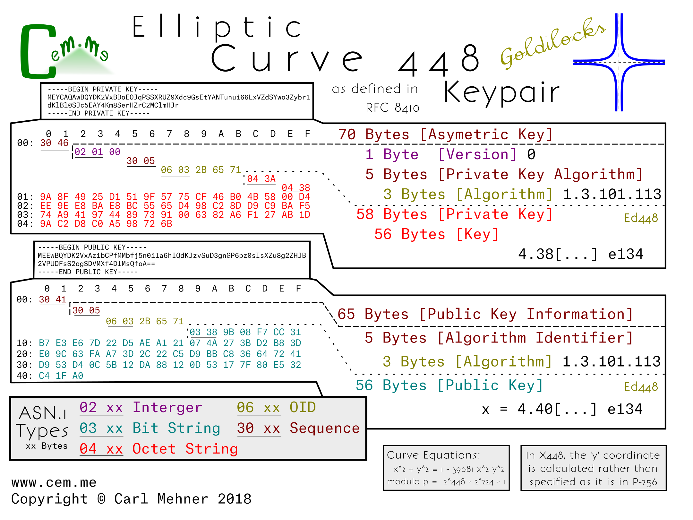
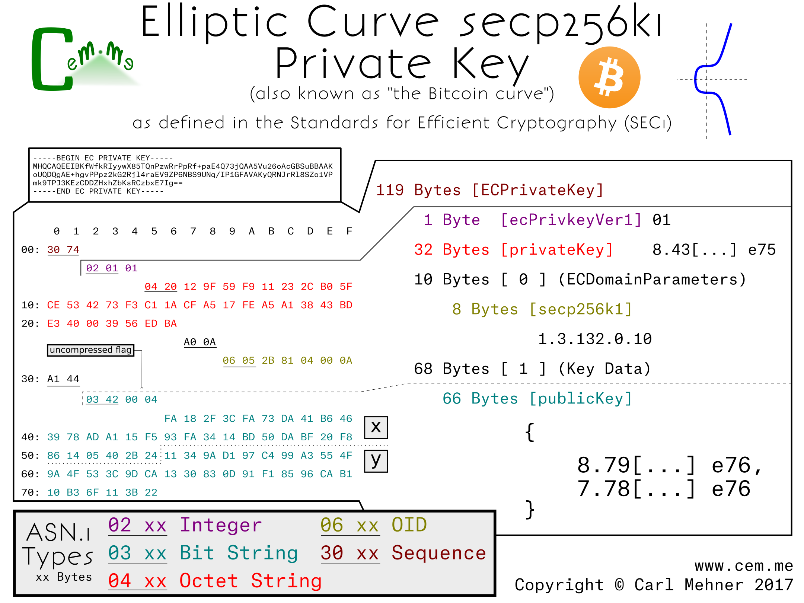

I recently gave talk a at BSides SATX - 2020, on Symmetric Encryption. In it I presented some new diagrams I created to depict AES-GCM and ChaCha20-Poly1305 AEAD algorithms.
Synopsis: Encryption has significantly changed over the past 20 years but most examples in textbooks and classes show the same encryption modes used from the '70s through the turn of the century. Modern browsers, APIs, and platforms use different and more secure methods to protect data. [...READ the TALK...]
In the previous post, all of the curves were based on the same encoding type from the Standards for Efficient Cryptography (SEC).
These two curves are encoded differently; moving away from the SEC-style encodings, the x25519 and x448 (or "Goldilocks") curves are newer curves and have recently been standardized by the IETF. The next step for wider spread adoption of these curves within the TLS ecosystem, such as using them as the key for TLS certificates, is to get them approved by the CA/Browser Forum as an acceptable key type (which could possibly also require support by HSM manufactures). Afterwards, browsers or other clients or servers would need to add support.
Looking at the actual encoded keys, there is one form for the public and one for the private key. This means that the structure for encoding x25519 public and private keys is identical to the keys in x448.
The private key structure is contained in the typical sequence wrapper and begins with a version indicator (currently at 0), followed by the private key algorithm OID wrapped in an ASN.1 sequence, and finally the private key (simply a large random number), encoded as an octet string wrapped in an octet string.
The public key structure is likewise a sequence wrapper containing an algorithm OID inside a sequence, followed by a bit string containing the x coordinate of the public key. As is possible in the SEC encoded keys, just the x coordinate is encoded in both x25519 and x448 public keys and leave the party utilizing the public key to reconstitute the y coordinate as needed.
X25519 is used in nearly three quarters the key exchanges on parts of the Internet today. Of course, this new x25519 RFC allows a standard way to encode the key for use in certificates.
X448 on the other hand, has less implementations, and may take a bit longer to gain popularity.

How might this look in an X.509 certificate for use in the Web PKI? For one thing, these curves could be used in places where a very small, yet still-as-strong certificate is desired. Notice the x25519 cert below (from the RFC) is only 304 bytes, while the leaf certificate for Google’s homepage is nearly 2 kilobytes.
Elliptic curve cryptography (ECC) began steadily increasing in normal use across the Internet over the past few years The number of TLS sessions tracked by WikiMedia hovered around 96 percent on average over the course of 2016. Nearly everyone uses ECC every day on the Internet. In keeping with this trend, several people have put up some very good tutorials and talks about ECC.
Nick Sullivan wrote an ECC primer when Cloudflare started using certificates that make use of ECC that you can read here.
Andrea Corbellini wrote a set of blog posts explaining deeper the way that the ECC maths (addition, multiplication, etc) work on curves with gif visualizations in part 1 and how that works on finite fields in part 2.
Martijn Grooten gave a great intro to ECC here including a good explaination on the way private keys work and why ECC is faster for point multiplication than for "division", which is essencially the crux of why ECC is considered secure.
Those resources all tend to deal with the math and theory behind ECC, this post is more about how keys are encoded for use in day-to-day use across the Internet and how the different parts of the keys fit into the math behind ECC.
Similar to RSA keys, ECC keys are encoded for storage and transmission using ASN.1 and the binary ASN.1 values are sometimes then encoded further as base64. There are a few different ways to encode EC keys, but one of the most common (currently) is SEC1 (Standards for Efficient Cryptography, specification 1).
This first example is the Curve P-256 encoded to explicitly include all the P-256 parameters from the SEC1.
The entire encoded key is wrapped in an ASN.1 sequence the same as RSA keys. Next, a version number to allow for future changes in the way keys are stored. (So far, it doesn’t look like this will be used any time soon. Incrementing the version number was planned for RFC 5480, but did not make it past the draft process.)
After the the version field, is the private key. For elliptic curves, the private key is simply a random number, in this case, 256 random bits.
The next section is the elliptic curve domain parameters, which contains the public, agreed upon, parameters for the particular curve. In this section, we have the typical version number at the start, followed by the OID (Object IDentifier) stating that this information is for an ANSI X9.62 type curve and the field size of that curve. The field size is the length, in bits, of the finite field that makes up the plane in which the elliptic curve operates.
The next part of the explicit parameters is the Curve Info, this section tells the way to initialize the curve equation before beginning the cryptographic calculations. The first two elements of this section are 'a' and 'b', the multiplicand and addend, respectively, of the curve equation, y^2 = x^3 + ax + b. The final piece is the seed value; this is the controversial part of P-256, any discussion around backdoors or weakness tend to center around this discrete value. The seed value is "random", then is hashed and run through an algorithm to get the addend "b" encoded previously. It is included in the curve parameters for verification purposes. The algorithm for verification and generation are found in the NIST Digital Signature Standard.
Following the curve parameters is the base point, the starting point for the math involved with the curve. Harkening back to Martijn's talk on ECC, at about the 10 minute mark, you can see where this base point come into play (or you could wait a few more paragraphs). The base point is encoded in a different way than most of the other cryptographic values we use in certificates. First, all the information is retrieved from an octet string.
The first byte of this octet string is a flag to notate whether or not the base point is encoded in the (not often used) compressed form (0x02 or 0x03) or the uncompressed form (0x04). If the flag is for the uncompressed form, as it is in this example, the remainder of the octet string is evenly divided into two parts, the x-coordinate and the y-coordinate. If the flag is set to use a compressed form, the value depends on the value of the y-coordinate (0x02, if even and 0x03 if odd), the remainer of the octet string is the x-coordinate.
The x-coordinate in the compressed form the y-coordinate simply calculated based off of the curve parameters. The order, a prime value, and the cofactor follow as the last of the domain parameters for the curve. Multiplying the order and cofactor give the total number of available points that are on this curve.
The final part of the ECC key is the data describing the public key. It is encoded in the same manner as the basepoint from before; compression flag, x-coordinate, then (if needed) the y-coordinate. The public key here is used in a similar fashion to the public key in RSA cryptography, however, instead of being generated by multiplying two primes, it is created by adding the basepoint to itself the number of times, as specified in the private key.
When using a curve encoded without the explicit parameters included, the result is much shorter. Also, since curves, like P-256 and other "NIST Curves", are widely supported in crypto libraries and software packages, the explicit parameters are typically left out and instead replaced with the named curve's identifier. For P-256, the OID is 1.2.840.100.45.3.1.7; this simple set of numbers replaces all of the domain parameters previously described.
Other curves standardized prior to around 2010, such as the ones used in OpenSSL 1.0.1 and earlier, follow these forms of either the, little used, explicit curve or the curve forms with implicit parameters. Examples include other NIST curves or the Brainpool curves.
One example of an alternate curve using a very similar form is the secp256k1. This is the elliptic curve used in Bitcoin. The only difference between the non-explicit parameter p-256 and secp256k1 is the OID used to identify the curves (and the public / private key pair).

When the explicit parameters are added to the secp256k1, it is easier to see the differences between it and P-256. The first difference is the field size: in 256k1, the field size is slightly larger than the P-256 field. Next, the main difference; constants a and b in this curve are 0 and 7, respectively rather than the much larger a and b from P-256. The k in secp256k1 stands for Koblitz, named after Neal Koblitz, a University of Washington professor. Koblitz curves are known for their speed as well as the lack of a seed of random/unexplained origin. The remaining elements very similar to the p-256 curve.
The next post, ECC (Part 2), will have some newer curves that have been recently gaining popularity and standardization. To make sure you see that when it is published, subscribe on Feedly, or anywhere else using RSS
This vulnerability allows anyone, with log-on access to an OS X machine, the ability to export private keys from the system keystore of OS X. Normally, there are two ways to stop this, only system administrators would have access to use or export system keys and they can be made non-exportable for any user. However, for this vulnerability, those two mitigations matter not. Normally, one would need to authenticate as an administrator, but as you can see below, Apple’s authentication procedure does not error out properly. This means that if an administrator has deployed a certificate solely, meant for system use, anyone else now can use it for their own purposes.
Note:I believe this is the same as CVE-2015-7058, however, I never recived official confirmation of that from Apple. It does seem the same, and appears to be fixed at this time.
Disclosure Timeline:
2015-03-12: Initial discovery
2015-03-13: Reported to Apple
2015-03-17: Apple responded they are investigating
2015-12-08: Update released
2015-12-10: Asked for confirmation that CVE-2015-7058 was the same vuln I reported - crickets.
2016-01-06: Public Disclosure
Technical Details & Description
Affected Product Details:
OS X before 10.11.2
Apple iOS before 9.2
Apple tvOS before 9.1
Security Risk:
A non-privileged user is able to export keys and certificate
they should not have access to export. Additionally, they
are able to deactivate the non-exportable flag on the key
if it was originally imported with '-x'.
How to recreate results / PoC:
Prerequisites
Either:
An asymmetric key exists in the system keystore and is
marked as non-exportable. A user (with administrator or
non-administrator system access) exists such that said
user desires the p and q (aka.
private key).
Or, an asymmetric key exists in the system keystore that
is exportable by administrators only. A non-administrator
exists that wants the key.
The "Attack"
A user logs into the machine.
Open Keychain Access, select the system keystore
Select the key to export, perform a 'secondary click' (aka 'right-click') on
the key, select the export menu item.
A prompt appears asking for a location to save the key:
Choose a place to save the key
A prompt appears to request administrator level credentials:
Gently press the escape key once.
The key is now exportable (if it wasn't before).
A prompt appears to set the exported key’s passphrase.
Choose to enter a password, or leave it blank. Click OK.
The user now has a pkcs#12 file complete with the private key.
Speculation below!
From what I can tell, the code would be something similar to this:
public void exportCertFromKeychain(certID cert) {
bool exportable = true;
// get place to store exported cert
// this should only happen after authorization!
filename f = getExportLocation();
// check if access is locked down to only allow
// administrators, or if it is non-exportable
if(isProtected(cert)) {
// get Authorization
int authResult = authenticateAdmin();
/* Authentication returns several different codes
0 is errAuthorizationSuccess
-60005 is errAuthorizationDenied
-60006 is errAuthorizationCanceled */
if(authResult == 0)
// here is the non-exportable bug
// this should be the first thing checked..
if(markedNonExportable(certID))
exportable = false;
else if(authResult == -60005) // here is the admin bug
exportable = false;
// they should check if 'authResult' was 0,
// and if not, set the value to false
// when you cancel, the result is -60006
// and 'exportable' remains true.
}
// get export password
string pass = getPassword();
if(exportable) {
exportCert(f, cert);
} else {
showError();
}
}
While I was making the PGP Poster I noticed that the User ID Packet, while broken apart in the UI into: Name, Email, and Comment, was in actuality just a large UTF-8 string. My imagination was spurred on by thoughts of interesting things I could do in that field, I recalled the math done by Ryan Castellucci allowing him to embed messages in an SSL certificate's public key. However, that only allowed for around one line of text, and the message had to be short to not affect the resultant prime. I wanted to be able to create a multiline message that would allow the creation of ASCII-style art. Of course, the User ID packet in the PGP key is ideal since you can put a large amount of arbitrary UTF-8 text inside.
The hardest part is translating UTF-8 into Base64 art. You cannot simply create a great piece of Base64 ASCII Art and throw it into the User ID packet because you first need valid UTF-8.
The translation between UTF-8 and Base64 is tricky because they are 8 and 6 bits respectively. One way to consistently take care of this problem is to find the least common multiple of 6 and 8, which is 24. Dividing 24 by 6 shows that we will have 4 Base64-character blocks to use as our building blocks for the ASCII Art (which if you have not figured out by now is really UTF-8 Art… but that is not as fun to say and there is really not a big difference).
The image below illustrates that showing UTF-8 characters translated into binary (split into 8-bits) and that binary, evenly divided into 6-bit chunks and translated into Base64.
Next, I wrote a script that printed out all of the valid UTF-8 characters in groups of 3 as translated to the 4 characters of Base64.
#!/usr/bin/python
import base64
for x in range(33, 127) : # printable utf-8
for y in range(33, 127) :
for z in range(33, 127) :
s = chr(x) + chr(y) + chr(z)
print (base64.b64encode(s, None))
This was a bit unwieldy; rather than search through nearly a half million patterns, I wrote some regex to map out a few of the groups of characters that I thought would make good candidates.
I came up with a few patterns to use; XC4r IXxX XXxX to put across the top and bottom (hint: it spells out ‘xCARLxxxxxxx’) then, to spell out CEM in the middle I used I11I and O000.
The next thing is to pad out the beginning of the User ID packet up to the output newline boundary. This was done by calculating the amount of characters needed and adding that many spaces to the front part of the User ID packet using my poster from the previous post.
Finally, start the key generation process and when it is time for the User ID input part, the default format from PGP keys is <Name> (<Comment>) <Email>. Make sure you factored the name and open parenthesis into the padding you needed, type the name and then, when asked, paste in the UTF-8 encoded Base64 ASCII art. The key generates encoding your glorious block of ASCII art. Print it out in the ASCII Armor'd Radix-64 that we all know and love as a PGP Key and behold:
-----BEGIN PGP PUBLIC KEY BLOCK-----
Version: GnuPG v1
Pretty Good Privacy (PGP) has been around since 1991, it has since gained notoriety and ubiquity as one of the most popular[citation needed] person to person publication privacy programs. Now keybase.io and even Facebook are allowing users to receive encrypted communications from their systems, whether or not that is a good idea.
After learning about the ins and outs of certificate structures, I tuned to PGP to learn how they are put together. Some of it is quite elegant, and allows the format to save space, especially in the packet headers where 2 bytes can convey essentially the same information that take 6 bytes in x.509. PGP keys are made up of these packets, each packet is used to convey information about the key as a whole. By default, a key has 5 packets; Public Key (for signing), User ID (just text), Signature packet (times, algorithms, settings, and the Signature [over the Public Key, User ID, and most of the signature packet]), sub-key (for encrypting), and the sub-key signature.
Each header starts with a 8-bit value. The first bit is always set, the second is a switch between old and new packet styles (the new style is used for tag types represented by values larger than 4 bits, by default, keys just have old style), for the old style bits 3 through 6 indicate the packet type, the last 2 bits tell the number of length bits that immediately follow the header packet.
The public key packet contains the signing data and certifying other’s keys, the key for encrypting the data is the sub-key. The User ID packet is just UTF-8 data, this is normally a name, email address, and a comment from the owner (there is quite a bit of room here to store data... make sure you subscribe with feedly, or with rss here). The two signature packets are used to show binding between a held private key by signing the hash of the public key in the particular packet (key or sub-key), and the information specified in the signature packet. Within the signature packet, there are several sub-packets that can contain a multitude of data from signature time policy data like what the key should be used for. This data is encoded in various ways from actual integer values, to hexadecimal values denoting particular values, and binary values where each bit adds a new flag value.
Here is a posterized PGP key, it uses RSA keys (only 1024-bit for brevity) for both signing and encrypting and has an expiration date, the other values are just the OpenPGP defaults.
This is a series of posters and along with explanations of what they mean. They go through the entire lifecycle of an SSL certificate; from the creation of the p and q for the private key, to the signing from the certificate authority, and finally to the inclusion of the serial number in revocation structures.
This was originally released as a series of posts. They are still available here: (one, two, three, four, five, six, and seven.)
If you want some high quality prints, or just want to support my work and get cool things to put on your wall you can do that here (you can get a PKI Poster Calendar and watch a cert throughout its lifecycle over a year).
Certificates are typically authenticated via a chain of signatures that lead back to any one of a number of trusted roots. DNSSEC is validated much the same way, however, with DNSSEC there's only one root for delegating authority for the DNS while in certificates, any certificate authority can sign a certificate valid for any domain. There is a way to use this delegated system to verify connections made over TLS called DANE. In short, DANE is a way to use the DNSSEC to get signed records from an authoritative source to validate certificates used in TLS. You can see a great introduction to DANE by the working group co-chair here: https://www.youtube.com/watch?v=emDxUQl1NvA Also, some recent slides from a presentation by Dan York are here: http://www.slideshare.net/Deploy360/3-dnssec-and-dane-ion-tokyo.
In all things there is risk, there are ways to mitigate risk using controls, some are detective controls (CT) some are preventative (DANE, Public Key Pinning). Other's have developed many different ideas in how to ensure that the certificate that makes it to the client's browser is the one which the site owner intended. Some have done analysis of the different methods [Ralph Holz][Ben Laurie][Matt Weeks]. A SecurityWeek article today even positions CT as a replacement for the preventive controls of TACK and DANE. I like certificate transparency (CT) as a way to detect CA compromise, but that is only after the fact (somthing I think that is not quite pointed out in the comparison chart at certificate-transparency.org or in Ben's ACM article from above). However, for a real-time preventitive control, I prefer DANE.
Currently the adoption of DANE is lacking in browsers. The draft I wrote is to allow particular sites to declare themselves as ready to support DANE so that they can further lock down the security of their TLS connections. The method is to use an HTTP "Dane-Validation-Assertion" header or HDVA. I envision this as working as follows: A site sends the DVA header to a browser that tells the browser the browser will then do a lookup over DNSSEC for a TLSA (DANE) record to perform additional validations on the certificate.
Options for this header include the max time to keep/remember the assertion, a way to include subdomains, and a way to require a valid DANE response before continuing. The max-age and include-subdomains are used in the same manner as HTTP Strict Transport Security (HSTS) and HTTP Public Key Pinning (HPKP), the 'require' however, is a concept specific HDVA. The reason I included this directive was because the way DANE works; if you receive a certificate that is valid through the regular means of validating using certificate authorities (PKIX) and do not receive any DANE records, the connection will continue. By using the 'require' directive, the server operator forces the connection to be validated using the traditional method of CAs accompanied by DANE or solely by using DANE.
This relates to a TLS certificate validation vulnerability in the clients accessing iCloud affecting bookmarks, calendar, tasks, and possibly other data types allowing for modification and disclosure of data.
Exposure of sensitive reminders, meetings, bookmarks (including bookmarklets that could allow logins to other saved websites). Users may store sensitive data within these data objects that are synced to iCloud, these are at risk of exposure through this vulnerability.
or, how I was able to get over 2500 certificates for domains that I do not own
Four years ago, in 2010, Kurt Seifried released research on how certificate authorities (CAs) validated hostnames in SSL certificate requests. Colin Keigher followed on by with an actual implementation of that research resulting in his finding of five email providers that allowed the registering of addresses, which effectively allowed him to garner certificates for those domains.
I found that this avenue for procuring certificates still exists in at least two mail providers, which means that I was able to get upwards of 2,500 certificates for various domains that I do not own.